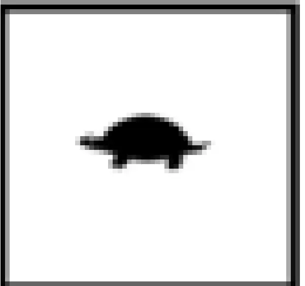
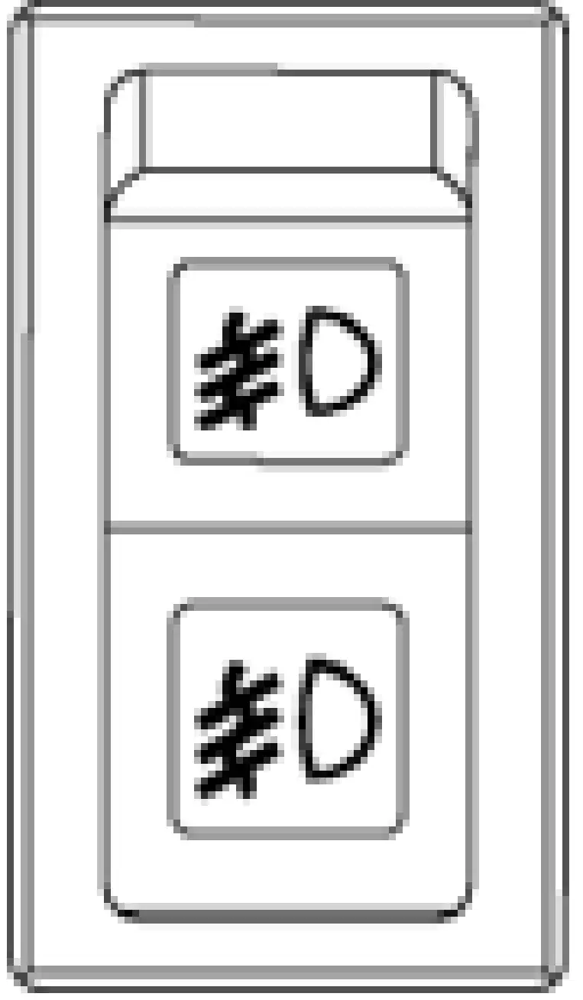
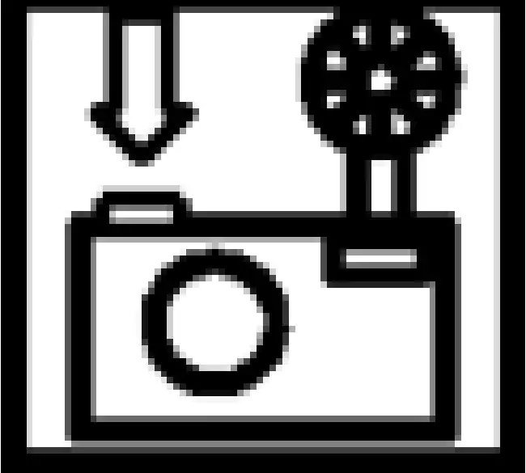

üéØ Objetivos de la Unidad
- ✓ Identificar los controles de que dispone el operador en la cabina del camión: volante de dirección, pedales, control de levante de la tolva
- ✓ Explicar la función, control y operación de cada elemento del panel de controles, instrumentos e indicadores
- ✓ Describir los controles del panel de ventilación/calefacción y del panel de luces indicadoras de advertencia
- ✓ Explicar la función y forma de uso de los comandos de operación que se encuentran en la consola central
CONTROLES DEL OPERADOR
1. CABINA DEL EQUIPO
Antes de operar el camión de extracción por primera vez, familiarícese y aprenda a manejar e interpretar todos sus controles, indicadores e instrumentos, lo cual resulta sumamente importante para el resguardo de su propia seguridad y de las personas que tienen relación con la operación del equipo, como también para evitar daños a este último.
Los controles, indicadores e instrumentos se agrupan en paneles y partes del equipo, los que son tratados separadamente para facilitar su ubicación y comprensión de las funciones que cumplen.
INTERIOR DE LA CABINA -- VISTA DEL OPERADOR
| 1. Volante de dirección | 6. Filtro de recirculación | 11. Limpiaparabrisas |
| 2. Pedal de freno/retardo | 7. Panel de instrumentos | 12. Radio AM/FM Repr. CD |
| 3. Pedal regulador/acelerador | 8. Cuadro de velocidad de retardo en pendiente | 13. Monitor KomVision |
| 4. Palanca de retardo | 9. Parlantes de la radio | 14. Ventilación del calefactor/aire acondicionado |
| 5. Controles de aire acondicionado/calefactor | 10. Alarma sonora de advertencia | 15. Portavasos |
2. VOLANTE DE DIRECCIÓN Y CONTROLES
El volante de la dirección se puede ajustar hacia adentro o hacia afuera y también se puede ajustar su ángulo de inclinación para proporcionar una posición cómoda del volante para la mayoría de los operadores.
Botón de bocina
Accione la bocina presionando el botón ubicado al centro del volante de la dirección. Asegúrese que la bocina funcione antes de mover el camión. Respete todas las reglas de seguridad locales con respecto al uso de la bocina como dispositivo de señal de advertencia antes de arrancar el motor y mover el vehículo.
Palanca de inclinación/telescopio
La columna de dirección se regula telescópicamente y el volante se puede inclinar con la palanca en el frente del interruptor de señalización de viraje.
Ajuste la inclinación del volante de la dirección tirando la palanca hacia el volante y moviendo el volante al ángulo deseado. Al soltar la palanca se bloqueará el volante en la posición deseada.
Ajuste la columna de dirección moviendo la palanca hacia delante para desbloquear la función telescópica. Después de lograr la posición deseada, suelte la palanca para fijar la columna de dirección en posición.
VOLANTE DE DIRECCIÓN
Interruptor señal de viraje multifuncional
El interruptor de señal de viraje multifuncional se usa para activar las luces de señalización de viraje, los limpiaparabrisas y para seleccionar luces altas o bajas.
Operación de señal de viraje
Un indicador en la parte superior, al centro del panel de instrumentos se encenderá para indicar la dirección de viraje seleccionada.
| Mueva la palanca hacia arriba para indicar viraje hacia a la derecha | |
| Mueva la palanca hacia abajo para indicar viraje a la izquierda. |
Operación de luces altas

Operación del limpiaparabrisas
| Limpiaparabrisas apagado | |
| Intermitente - Frecuencia larga | |
| Intermitente -- Frecuencia media | |
| Intermitente -- Frecuencia corta | |
| Baja velocidad | |
| Alta Velocidad | |
| Al presionar el botón en el extremo de la palanca se activará el limpiaparabrisas. |
Palanca de retardo
La palanca de retardo ubicada al lado derecho de la columna de dirección se puede utilizar para modular el esfuerzo de retardo. La palanca comandará el rango total de retardo y permanecerá en una posición fija al soltarla.
- Cuando la palanca se gira a la posición completamente hacia "arriba" (a la izquierda), está en la posición OFF/sin retardo. Un tope ajustable mantiene la palanca en la posición OFF.
- Cuando la palanca se gira a la posición completamente hacia "abajo" (a la derecha), está en la posición ON/retardo.
- Para descensos prolongados por una pendiente, la palanca se puede posicionar para proporcionar el esfuerzo de retardo deseado y permanecerá en esa posición.
Pedal de freno/retardo
El pedal de freno/retardo es un pedal único que se opera con el pie que controla tanto las funciones de retardo como de freno de servicio. La primera parte del recorrido del pedal comanda el esfuerzo de retardo a través de un potenciómetro giratorio. La segunda parte del recorrido del pedal modula la presión del freno de servicio directamente a través de una válvula hidráulica. Así, primero el operador debe aplicar y mantener el retardo dinámico completo para aplicar los frenos de servicio. Al soltar el pedal devuelve el freno y el retardador a la posición OFF.
Cuando se presiona parcialmente el pedal, se acciona el retardo dinámico. A medida que se presiona aún más el pedal, hasta donde el retardo dinámico queda totalmente aplicado, los frenos de servicio (mientras mantiene el retardo completo) se accionan a través de una válvula hidráulica que modula la presión a los frenos de servicio. Al presionar completamente el pedal se aplica completamente tanto el retardo dinámico como los frenos de servicio. La luz indicadora en el panel superior se encenderá, y se sentirá un aumento en la resistencia del pedal al aplicar los frenos de servicio.
Para la operación normal del camión, el retardo dinámico (pedal de control que se opera con el pie) se debe utilizar para disminuir y controlar la velocidad del camión.
Los frenos de servicio se deben aplicar cuando el retardo dinámico requiera fuerza de frenado adicional para disminuir rápidamente la velocidad del camión o al detenerlo completamente.
Pedal acelerador
El pedal acelerador es un pedal operado con el pie, el cual permite al operador controlar las rpm del motor, dependiendo de la presión ejercida sobre el pedal.
Es utilizado por el operador para solicitar torque a los motores de tracción en avance o retroceso. En este modo, el controlador del sistema de propulsión ordena la velocidad del motor correcta para la potencia requerida. En NEUTRO, este pedal controla la velocidad del motor directamente.
CONSOLA CENTRAL
La consola central está ubicada al lado derecho del asiento del operador, por lo que los mandos son operados con mano derecha.
| 1. Consola central | 8. Dial de control de la velocidad de retardo |
| 2. Palanca selectora de marcha | 9. Dial de control de la velocidad de retardo |
| 3. Interruptor de anulación (override) y reinicio de falla | 10. Botón de almacenamiento de datos |
| 4. Interruptor de detención del motor | 11. Tomas de corrientes auxiliares de 12V |
| 5. Interruptor de la ventana izquierda | 12. Salida de control del extintor de incendios |
| 6. Interruptor de la ventana derecha | 13. Salida de la radio de comunicación |
| 7. Palanca de control de elevación |
Palanca selectora de marcha (2)
La palanca selectora de marcha está montada sobre una consola a la derecha del asiento del operador. Es una palanca de cuatro posiciones que controla los movimientos de estacionamiento, retroceso, neutral y avance del camión.
Antes de mover la palanca selectora de marcha, aplique los frenos de servicio para detener completamente el camión. Presione el botón lateral para liberar el bloqueo de retención, luego mueva la palanca de control a la posición deseada.
Cuando la palanca selectora está en la posición central N, se encuentra en NEUTRAL. Cuando la palanca selectora está en la posición P, se encuentra en ESTACIONAMIENTO y se aplica el freno de estacionamiento. El freno de estacionamiento se aplica por resorte y se libera de forma hidráulica.
Está diseñado para mantener el camión estacionado cuando el motor está apagado y el interruptor de arranque se coloca en OFF. El camión debe detenerse completamente antes de mover la palanca selectora de marcha a ESTACIONAMIENTO, o podría dañar el freno de estacionamiento.
Cuando el interruptor de arranque esté encendido y la palanca selectora esté en posición de ESTACIONAMIENTO, se iluminará la luz indicadora del freno de estacionamiento.
Coloque la palanca selectora de marcha en la posición F para seleccionar el desplazamiento en AVANCE. Coloque la palanca selectora en la posición R para seleccionar el desplazamiento en RETROCESO. No permita que la palanca selectora se desplace demasiado y llegue a la posición de ESTACIONAMIENTO cuando desee seleccionar RETROCESO.
Interruptor de anulación y reinicio de falla (3)
Cuando se mantiene presionado, este interruptor se puede utilizar para varias funciones.
- Permite al operador anular el interruptor de límite de elevación de la tolva y mover el camión hacia delante cuando la palanca selectora se encuentra en AVANCE, la tolva está elevada y los frenos están liberados. El interruptor de anulación se utiliza para este propósito solo en situaciones de emergencia.
- Desactiva la función del pedal de retardo cuando la velocidad del camión es inferior a 5 kph (3 mph).
- También se utiliza para reiniciar fallas del sistema eléctrico cuando el camión está detenido.
Interruptor de detención del motor (4)
Use este interruptor para detener el motor si el interruptor de arranque deja de funcionar o para detener el motor sin desactivar los circuitos eléctricos de 24 VDC.
Interruptores de control de la ventana (5 y 6)
El interruptor de la ventana (5, 6) controla el funcionamiento de esta. El interruptor se coloca en la posición OFF mediante la acción de un resorte.
- Al presionar la parte delantera del interruptor, la ventana de la cabina sube
- Al presionar la parte posterior, baja.
Palanca de control de elevación (7)
El control de elevación es una palanca manual de cuatro posiciones ubicada entre el asiento del operador y la consola central.
1.Elevación 2.Retención 3.Flotación 4.Descenso
Elevación de Tolva
- Tire la palanca hacia atrás para accionar el circuito de elevación. (Si se suelta la palanca en cualquier posición durante la "elevación", la tolva quedará en posición de RETENCIÓN)
- Aumente las rpm del motor para incrementar la velocidad de elevación.
- Reduzca las rpm del motor a medida que los cilindros de elevación lleguen a su última etapa y comiencen a extenderse, luego deje el motor en ralentí bajo cuando la última etapa alcance la mitad de su extensión.
- Libere la palanca de control de elevación cuando la última etapa alcance su extensión total.
- Baje la tolva sobre el chasis después de descargar todo el material.
Descenso de la tolva
Mueva la palanca de control de elevación hacia adelante a la posición de DESCENSO y suéltela. Al soltar la palanca, la válvula de control de elevación quedará en la posición de FLOTACIÓN, permitiendo que la tova vuelva al chasis.
Dial de ajuste de control de velocidad de retardo (RSC) (8)
La configuración de la velocidad de retardo se mostrará en la pantalla digital en el panel de instrumentos.
El dial de ajuste del control de la velocidad de retardo (RSC) (8) permite al operador variar la velocidad de descenso del camión, la cual mantendrá el sistema de control al descender por una pendiente. Esta función se puede anular con el pedal de regulación, la palanca de retardo o el pedal de freno/retardo.
|  | Cuando el dial se gira a la izquierda hacia este símbolo, el camión descenderá la pendiente a menor velocidad. |
| Cuando el dial se gira a la derecha hacia este símbolo, la velocidad del camión aumentará. |
Consulte siempre el cuadro de velocidad en pendiente en la cabina del operador y siga las recomendaciones para operar el camión. NO EXCEDA las velocidades MÁXIMAS recomendadas al descender una pendiente con el camión cargado.
La posición del pedal del acelerador anulará la acción del RSC. Si el operador presiona el pedal del acelerador para aumentar la velocidad del camión, el retardo dinámico no se activará a menos que se alcance la configuración de velocidad del camión o se utilice el pedal del freno/ retardo (o la palanca de retardo). Si suelta el pedal del acelerador y el interruptor RSC se encuentra activado, se activará el retardo dinámico a la misma velocidad del interruptor RSC o superior y ajustará la velocidad del camión para mantener la velocidad marcada. La velocidad marcada se mostrará en la pantalla digital en el panel de instrumentos.
Para ajustar el control RSC, coloque el interruptor (9) en ON (encendido) y comience a girar el dial (8) hacia la velocidad máxima mientras conduce el camión a la velocidad máxima deseada. Suelte el pedal del acelerador para permitir que el camión avance por inercia y gire el dial de ajuste RSC lentamente hacia la izquierda hasta activar el retardo dinámico. El retardo dinámico se activará automáticamente cada vez que se alcance la velocidad "configurada", el interruptor RSC se encuentre activado y el pedal del acelerador esté liberado.
Con el interruptor RSC en ON (encendido) y el dial en el ajuste deseado, el sistema funcionará de la siguiente manera: Cuando el camión alcance la velocidad programada y el pedal del acelerador esté liberado, se aplicará el retardo dinámico. A medida que se intente aumentar la velocidad del camión, la cantidad de esfuerzo de retardo se ajustará automáticamente para mantener la velocidad seleccionada.
Cuando la velocidad del camión disminuye, el esfuerzo de retardo se reduce para mantener la velocidad seleccionada. Si la velocidad del camión disminuye a aproximadamente 5 kph (3 mph) bajo la velocidad programada, el retardo dinámico se desactivará automáticamente. Si necesita reducir aún más la velocidad del camión, el operador puede girar el dial de ajuste a una nueva configuración o presionar el pedal de freno/retardo (o usar la palanca de retardo).
Si el operador presiona el pedal de freno/retardo o utiliza la palanca de retardo y el esfuerzo de retardo requerido es mayor que el del sistema automático, el pedal de freno/retardo o la palanca de retardo anularán el RSC.
Interruptor de control de velocidad de retardo RSC (9)
Botón de almacenamiento de datos (10)
El botón de almacenamiento de datos lo debe utilizar solo el personal de mantenimiento calificado y sirve para registrar "capturas instantáneas" del sistema de transmisión AC en la memoria.
Tomas de corriente auxiliar de 12V (11)
Estas tomas se pueden utilizar para proporcionar energía de 12VDC a las herramientas y los accesorios.
Salida de control de extinción de incendios (12)
La salida se puede usar para suministrar energía a un sistema de extinción de incendios opcional con el interruptor de arranque en la posición ON.
Salida de la radio de comunicación (13)
La salida se puede utilizar para proporcionar energía a una radio de comunicación de 2 bandas opcional con el interruptor de arranque en la posición ON.
CONTROLES DEL CALEFACTOR Y AIRE ACONDICIONADO
Estos controles están al lado derecho de la consola frontal, frente al operador.
| 1. Perilla de control de la velocidad del ventilador | 4. Zona roja |
| 2. Perilla de control de temperatura | 5. Perilla de dirección del flujo de aire |
| 3. Zona azul | 6. Rejillas de ventilación del calefactor/aire acondicionado. |
Perilla de control de la velocidad del ventilador (1)
La perilla de control del ventilador controla el motor del ventilador de aire de la cabina. El motor del ventilador es un motor de 3 velocidades (baja, media y alta). Las velocidades se seleccionan girando la perilla de control hacia la derecha hasta la posición deseada. La posición de OFF (apagado) se encuentra en el tope izquierdo de la perilla. La perilla de control debe estar en ON (encendido) para activar el aire acondicionado.
Perilla de control de temperatura (2)
La perilla de control de temperatura permite al operador seleccionar una temperatura agradable.
La perilla de control determina el funcionamiento de los modos del aire acondicionado y del calefactor.
Si gira la perilla de control hacia la izquierda (zona azul 3), hará que el compresor del A/C funcione, lo que generará temperaturas más frías. El ajuste de aire más frío (menor Tº) corresponde al tope izquierdo de la perilla.
Si gira la perilla de control hacia la derecha (zona roja 4) afectará al flujo del refrigerante en el centro del calefactor, lo que generará temperaturas de aire más cálidas. El ajuste de aire más cálido (mayor Tº) corresponde al tope derecho de la perilla.
Perilla de dirección del flujo de aire
La perilla (5) controla la dirección del flujo de aire de la siguiente manera.
| El flujo de aire proviene solamente de las rejillas de ventilación del piso | |
| El flujo de aire proviene de las rejillas de ventilación superior y del piso | |
| (Ícono azul) Sale aire deshumedecido por las rejillas de ventilación superior y las del piso | |
| Desempañador -- Sale aire deshumedecido hacia el parabrisas | |
| Desempañador -- Sale aire deshumedecido hacia el parabrisas y a través de las rejillas de ventilación del piso |
Rejillas de ventilación del calefactor/aire acondicionado
Es posible rotar las rejillas de ventilación del calefactor/aire acondicionado en 360º. Hay tres rejillas de ventilación en el compartimento del calefactor/aire acondicionado, cuatro rejillas de ventilación a través de la parte superior del tablero de instrumentos y una rejilla en cada uno de los tableros de instrumentos izquierdo y derecho. También hay cuatro rejillas adicionales debajo del tablero de instrumentos. El flujo de aire que pasa por las rejillas de ventilación se controla manualmente por medio de la apertura, el cierre o la rotación de sus persianas.
INSTRUMENTOS DEL PANEL, INDICADORES Y CONTROLES
Este panel se encuentra, enfrente del operador sobre la consola central.
TABLERO DE INSTRUMENTOS
El operador debe comprender la función y operación de cada uno de los instrumentos y de los controles. Las funciones de control se identifican con símbolos internacionales que el operador debe reconocer inmediatamente. Este conocimiento resulta esencial para un funcionamiento adecuado y seguro.
Los ítems marcados como "opcionales" no se aplican a todos los camiones.
Símbolos de control
El operador debe comprender la función y operación de cada uno de los instrumentos y controles. Muchas funciones de control se identifican con símbolos internacionales, los que el operador debe aprender a reconocer de inmediato. Este conocimiento resulta esencial para una operación adecuada y segura.
Los elementos marcados como "opcionales" no aplican para todos los camiones.
Los siguientes símbolos son indicadores generales y pueden aparecer en distintas ubicaciones y combinaciones en el panel de instrumentos. La mayoría de los interruptores tiene dos luces LED, una de color ámbar y otra verde. La luz ámbar está ubicada en la parte superior del interruptor e indica que se activó esa función. La luz verde está ubicada en la parte inferior del interruptor e indica que la función no está activada.
- Para activar una función, presione la parte superior del interruptor. En ese momento, la luz ámbar se encenderá y la luz verde se apagará.
- Para desactivar una función, presione la parte inferior del interruptor. En ese momento, la luz verde se encenderá y la luz ámbar se apagará.
Los siguientes símbolos son indicadores generales y pueden aparecer en múltiples ubicaciones y combinaciones en el panel de instrumentos.
| Este símbolo puede usarse sólo o con otro símbolo. Este símbolo identifica la posición en OFF (desconectado) de un interruptor o control. | |
| Este símbolo puede usarse sólo o con otro símbolo. Este símbolo identifica la posición en ON (conectado) de un interruptor o control. | |
| Este símbolo identifica la posición "Presionado" de un interruptor o control. | |
| Cuando este símbolo aparece en un indicador o control sirve para identificar que este indicador o control NO se usa | |
| Este símbolo identifica un control o interruptor giratorio. Gire la perilla a la izquierda o a la derecha para activar la función | |
| Este símbolo identifica un interruptor utilizado para probar o revisar una función. Presione el interruptor en el costado cerca del símbolo para realizar la prueba. |
Rejillas de ventilación del calefactor/aire acondicionado (1)
El operador puede controlar la dirección de las rejillas del calefactor/aire acondicionado (1) para mantener un flujo de aire agradable de aire en la cabina.
Panel de luces indicadoras de estado (2)
El panel de luces indicadoras de estado contiene una variedad de luces que señalan al operador mensajes de estado importantes relacionados con funciones específicas del camión. Para obtener más información acerca de los indicadores.
Medidor de temperatura del aceite hidráulico (3)
Existen dos bandas de colores: verde y roja.
La banda de color verde indica que la operación es normal. A medida que la aguja se acerque a la zona roja, la velocidad mínima en ralentí del motor aumentará para ayudar a enfriar el aceite.
La banda de color roja indica que la temperatura del aceite en el tanque hidráulico es alta. Continuar con la operación en este estado, podría dañar los componentes del sistema hidráulico. De ser así, el operador debe detener con cuidado el camión, mover el interruptor selector a la posición de ESTACIONAMIENTO y hacer funcionar el motor a 1200 - 1500 rpm para reducir la temperatura del sistema.
Medidor de temperatura del refrigerante (4)
El rango de temperatura después de calentar el motor y con el camión en funcionamiento en condiciones normales debe ser de 85° a 97 °C (185° a 207 °F).
Velocímetro/pantalla digital (5)
El velocímetro/pantalla digital muestra la siguiente información:
- El velocímetro análogo indica la velocidad del camión en millas por hora (mph) o en kilómetros por hora (kph).
- La pantalla digital muestra la información del medidor de carga útil.
- La pantalla digital también muestra mensajes de advertencia y códigos de fallas que indican condiciones de funcionamiento anómalo y problemas críticos.
Medidor de nivel de combustible (6)
Medidor de temperatura del sistema de transmisión (7)
Interruptor de luces de advertencia (8)
Interruptor de prueba de frenos antes del cambio de turno (9)
La luz ámbar ubicada en la parte superior del interruptor se utiliza para indicar cuando el camión está en el modo de prueba y se conoce como la luz de revisión de frenos. Cuando se enciende, indica que la prueba de frenos finalizó. Cuando parpadea, significa que la prueba de frenos está en el punto de validación o que la prueba del sistema de retardo terminó.
Interruptor de control del freno de traba (10)
Al entrar en una zona de carga o de descarga, detenga el camión con el pedal del freno de servicio. Cuando el camión esté completamente detenido y en posición de carga, mueva la palanca selectora de marcha a NEUTRAL, luego aplique el bloqueo de frenos presionando la parte superior del interruptor oscilante. Para liberar el freno, presione la parte inferior del interruptor oscilante.
Interruptor de descanso (11)
Cuando se activa, se enciende una luz ámbar interna. Se debe activar el interruptor para des energizar el sistema de transmisión AC cada vez que se apague el motor o se deje el camión estacionado con el motor en marcha.
Para poder activar esta función, la palanca selectora de marcha debe estar en estacionamiento o neutral y el vehículo debe estar detenido. Esto permitirá que el motor siga funcionando con el sistema de transmisión AC desenergizado.
Calentamiento del motor (12)
Los ajustes del archivo de configuración de GE también permiten que este interruptor controle el calentamiento de los módulos IGBT en el gabinete de control. Cuando los inversores están desactivados para labores de tracción, se mantendrán en modo de calentamiento. Al seleccionar una dirección, los inversores pasarán de modo de calentamiento a modo de tracción.
Este impulso se genera enviando una carga a través de un banco de resistores de parrilla en la parrilla de retardo.
Interruptor de los espejos térmicos
Interruptor de la escalera retráctil (15)
Interruptor de arranque (16)
El interruptor de arranque es un interruptor de cuatro posiciones (ACC, OFF, RUN, START). Actualmente, no se utiliza la posición ACC.
Arranque
Cuando el interruptor se gira una posición hacia la derecha, se selecciona la posición de funcionamiento (RUN) y se activan todos los circuitos eléctricos excepto el de arranque.
- Con la palanca selectora de marcha en posición de estacionamiento, gire el interruptor de arranque completamente hacia la derecha, a la posición de arranque (START) y mantenga esta posición hasta que el motor se encienda. Desde la posición de arranque (START), el interruptor vuelve por medio de un resorte a la posición de funcionamiento (RUN) cuando la llave de arranque se libera. Si el motor está equipado con un sistema de pre lubricación, notará que se demora en arrancar.
- Después de arrancar el motor, coloque el interruptor de descanso (4) en la posición OFF para desactivar el modo descanso. Consulte la descripción del interruptor de descanso más adelante en este capítulo.
Luz de advertencia (17)
Botones de contraste de la pantalla digital (18)
La operación en ambientes fríos puede afectar el contraste de la pantalla digital. Si es necesario, puede usar los botones para aumentar o disminuir el contraste de la pantalla digital y facilitar su lectura.
Luces de señalización de viraje (19)
Regulador de intensidad de las luces del panel
Interruptores de modo (21 Y 22)
Interruptor de las luces neblineros (23)
Interruptor de las luces de retroceso (24)
Interruptor de la luz de la escalera (25)
Interruptor de las luces delanteras/iluminación del panel (26)
PANEL DE LUCES INDICADORAS DE ESTADO
LADO IZQUIERDO TABLERO DE INSTRUMENTOS
Símbolo de las luces de estado
Cuando estas luces ámbar (amarillas) están encendidas, avisan al operador que la función del camión indicada requiere cierta precaución. Lea las siguientes descripciones para obtener más información acerca de los símbolos.
Tolva elevada (1)
Freno de estacionamiento (2)
Sistema de propulsión no preparado (3)
Sin propulsión (4)
Calentamiento del motor (5)

Temporizador de detención del motor (6)
Secador de las parrillas de retardo (7)
Freno de traba (8)
Control de tracción (9)
Monitor de reparación (10)
Escalera retráctil extendida (11)
Captura en curso (12)
Pantógrafo energizado (13)
Pantógrafo extendido (14)
Freno de servicio (15)
Retardo dinámico (16)
Sin voltaje de enlace DC (17)
üéÆ Juegos Interactivos de Aprendizaje
Refuerza tu aprendizaje con estos juegos educativos. Puedes jugar cuantas veces quieras para dominar cada concepto.
üìù Quiz Evaluativo
Evalúa tus conocimientos con este quiz de 20 preguntas. Puedes repetirlo cuantas veces necesites.